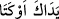
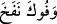
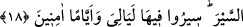

misin? Sadece bir gün îman ve tevfîk nimetine şükretmedi de küfür ve inkâra düştü.
Bundan Allah Teâlâ’ya sığınırız.
Küfür ehli kalp ve ruh bostanına habis ağaçları dikince, ancak habis meyveler elde
ettiler. Ancak hak ettikleri muâmeleye tâbi tutuldular. Yalnız ektiklerini biçtiler. Ancak
kazdıkları kuyuya düştüler. Nitekim “
(Ellerin tutup bağladı, ağzın da
üfledi/Kendin ettin kendin buldun)” denilmiştir. Bu söz kendi kusur ve ihmalinden
dolayı hasret çeken ve rahatsız olan kimse için meşhur bir darb-ı meseldir.[23] Bir
hadîste de şöyle buyrulmuştur: “Kim hayır bulursa Allah’a hamd etsin” ki rahmet ve
hayrın kaynağı O’dur. “Kim başka bir şey bulursa sadece kendini kınasın.”[24]
Mesnevî’de der ki:
Hak Sebeliler’e çok görkem verdi.
Yüz binlerce köşk, çardak ve bahçeleri vardı.
Buna şükretmediler o damarsızlar.
Vefa açısından köpekten aşağıydılar.
Bir köpeğe bir kapıdan bir lokma ekmek gelince,
Artık o kapıya uşaklık eder.
Kendisine zulüm ve eziyet edilse bile
O kapının bekçisi olur.
O kapıya bel bağlayıp yerleşir.
Başka yeri yeğlemeyi küfür sayar.
Vefasızlık köpekler için utanç kaynağı olduğuna göre
Vefasızlığı nasıl reva görürsün?
18. Onların yurdu ile, içlerini bereketlendirdiğimiz memleketler arasında, kolayca
görünen nice kasabalar var ettik ve bunlar arasında yürümeyi konaklara ayırdık.
Oralarda geceleri, gündüzleri korkusuzca gezin dolaşın, dedik.
Sebeliler’in kıssasını tamamlamak üzere onlara meskenlerinde, hazar ve
ikametlerinde verilen nimetler hikaye edildikten sonra bu âyette sefer, seyahat ve
ticaretlerinde onlara verilen nimetler ile onların bu nimetlere karşı yaptıkları
nankörlükler ve kendilerine verilen cezalar beyan edilmektedir. Kıssanın hepsinin
birlikte zikredilmemesi, bir şeyi daha iyi anlatma ve tekrar etmede daha fazla uyarı ve
hatırlatma olduğundandır.
Onlara meskenlerinde/oturdukları yerlerde verdiğimiz çeşitli nimetlerle beraber